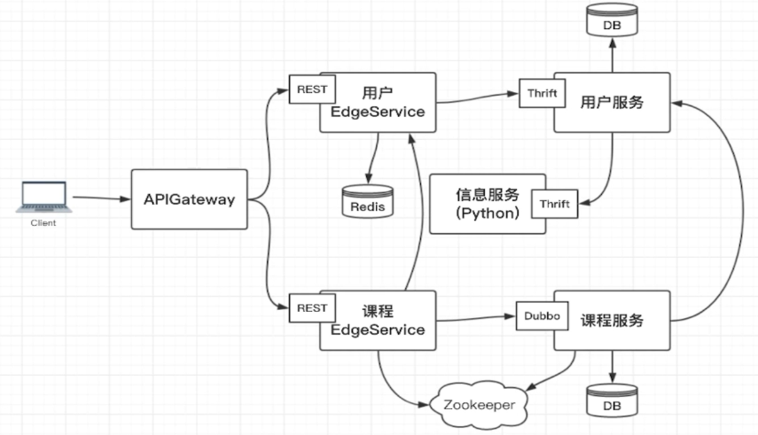
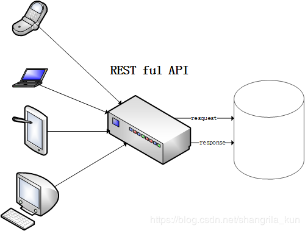

# API Gateway
# Zookeeper 服务的注册和发现
# 服务 API
- REST
- Thrift
- Dubbo - 基于 kv 的存储来进行服务的发布和订阅
# REST API

REST，即 Representational State Transfer 的缩写，中文是 "表现层状态转化"。
通俗来讲就是：资源在网络中以某种表现形式进行状态转移。(再通俗来说，就是通过 HTTP 请求服务器上的某资源，使该资源 copy 了一份到服务请求方那去了 (get 动作)。
Representational：某种表现形式，比如用 JSON，XML，JPEG 等；HTTP 请求的头信息中用 Accept 和 Content-Type 字段指定，这两个字段才是对 "表现形式" 的描述。
State Transfer：状态变化。通过 HTTP 动词（GET,POST,DELETE,DETC）实现。
互联网通信协议 HTTP 协议，是一个无状态协议。** 这意味着，所有的状态都保存在服务器端。
** 因此，如果客户端想要操作服务器，必须通过某种手段，让服务器端发生 "状态转化"（State Transfer）。
HTTP 协议里面，四个表示操作方式的动词：GET、POST、PUT、DELETE。
它们分别对应四种基本操作：GET 用来获取资源，POST 用来新建资源（也可以用于更新资源），PUT 用来更新资源，DELETE 用来删除资源。REST 是由谁提出来的:
Roy Thomes Fielding 在他 2000 年的博士论文中提出 REST 架构模式，他是 HTTP 协议 (v1.0 和 v1.1) 的主要设计者、Apache 服务器作者之一、Apache 基金会第一任主席。什么是 REST ful API
基于 REST 构建的 API 就是 Restful 风格。为什么产生了这种架构模式
传统的那种 JSP 前后端耦合在一起的网页模式我们称之为 “上古时期” 网页，这种模式弊端很多。
近年来，随着移动技术的发展，各种移动端设备层出不穷，RESTful 可以通过一套统一的接口为 Web，iOS 和 Android 提供服务。
另外对于广大平台来说，比如新浪微博开放平台，微信公共平台等，它们不需要有显式的前端，只需要一套提供服务的接口，于是 RESTful 更是它们最好的选择。如何设计规范的 REST ful API 接口
- RESETful API 设计规范
- RESTful API 最佳实践
# 单点登陆系统 慕课网有免费课程
访问单点登陆系统，校验拿到的 token 或者称为 tickets (票据) 是不是正确的，然后使用这个东西去换取用户的具体信息，再存储到当前的服务里面